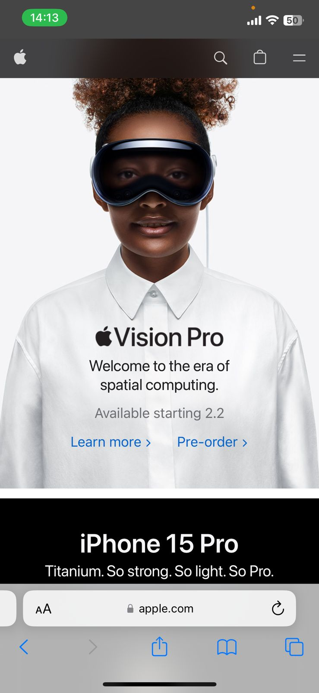
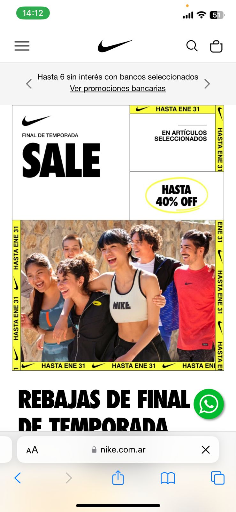

Visual Hierarchy
Example: Apple
Apple's website masterfully uses visual hierarchy to guide users' attention. The large hero image at the top instantly grabs attention and showcases the most important product. Smaller sections with smaller headlines and icons follow, prioritizing key information without overwhelming the user. This clear hierarchy makes it easy for users to find what they need quickly and efficiently.
White Space and Clean Design
Example: Google
Google's mobile search page exemplifies the power of white space and clean design. The stark white background creates a sense of simplicity and focus, drawing all attention to the Google logo and search bar. This minimal design eliminates distractions and ensures users can easily perform their primary task: searching.
Fitt's Law
Example: Nike
Nike's mobile website applies Fitt's Law by providing large, clearly labeled buttons for the two most common user actions: shopping and accessing their member accounts. The larger size of the buttons makes them easier to target with a finger, reducing the time and effort required to interact with them. This design optimizes the user experience by making key actions easier and faster to access.